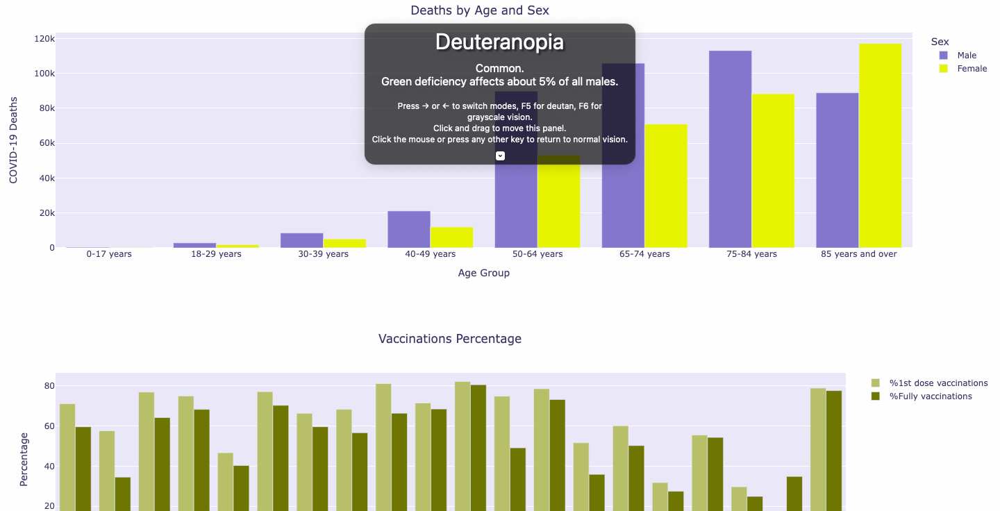

About:
H517 Visualization Design, Analysis, and Evaluation Project 2
Team Members:
Murali Krishna Vattikunta, Priyanka Surapaneni
Guided By: Dr.Khairi Reda
Introduction:
From the past two years Covid-19 has been in our daily life, it started changing its mutation and keeps on changing from almost a year. We have many websites which give the stats of the day to day cases for covid, but there is no particular website where we can get all the detailed information about covid-19 which includes cases, deaths, variants, vaccination rates, state wise cases etc. So we want to visualize all those details into one webpage, so that it can be easy to understand and can get an overall information about the covid with the recent statistics.
Problem Statement:
The aim of our visualization is to gather all the recent information from websites and articles and plot in an interactive way.
Data Source:
We have taken data from owid-covid-data.csv and some of the websites and articles which we have referenced below. We want to show all the information in one page but it is not available in one particular website, so we used many websites and articles to get all the information.
Questions:
- What are the total number of covid cases and deaths for the top 20 countries?
- We used a world map with clickable markers to represent the cases and deaths trends for the top 20 countries.
- Insight: This map tells us that America has the highest number of cases and deaths followed by India being the second.
- Plot the covid cases by variant
- We used a stacked bar graph to represent the cases by variant.
Insight: From this graph, we can tell that which country has most number of cases by variant:
Alpha -> United kingdom has the number of alpha variant cases
Beta -> South Africa has the number of beta variant cases
Gamma -> Brazil has the number of gamma variant cases
Delta -> United kingdom has the number of delta variant cases
Lambda -> Argentia has the number of lambda variant cases
- What are the total number of covid cases and deaths by continents?
- We used a pie chart to show the percentage of cases and deaths by continents, so that we can say which continent has contributed more number of cases and deaths.
- Insights: Asia has the highest percentage of covid cases with 30.9% and Europe has the highest percentage of covid deaths with 27.3%.
- Plot the active and critical cases by continents
We tried to use side by side bar chart to show the relation but the active cases being higher and critical cases being smaller, the critical cases graph is getting diminished, so we used two graphs one below the other which tells us the active cases and critical cases by continents, so this helps us to find the top continent for both active and critical cases.
- Insights: By seeing the graphs we can say that North America has the highest number of active cases( 10,513,362) and Asia has the highest number of critical cases(30,062).
- What are the daily new cases of covid in the USA by state wise?
- We used a cholera path map to see the daily new cases state wise, so we can identify which state has the highest number of cases to the date they want.
Insights: We selected the below dates to see the which state has the highest number of day wise cases:
2020-06-25 -> Texas has the highest number of daily cases(5,996)
2020-12–02 -> California has the highest number of daily cases(20,762)
We can select any date and can see the daily cases information for all the states.
- Plot the total tests vs total cases
- We used a scatter plot to show the correlation between total tests versus total cases.
- Insights: From the scatter plot, we can say that Vermont has the least number of covid cases(53,431) and California has the highest number of cases(5,000,000).
- Plot the covid deaths by age and sex in USA
- We used a stacked bar graph to show the relation between deaths by age and sex, this tells us which age group and sex has more number of deaths.
From the above graphs we can say that people with age above 85 years and above has the highest number of deaths(206,038), and overall male has highest number of deaths(430,257).
- Plot the vaccination percentage for top 20 countries
- We used a bar graph to show the top 20 vaccinated countries, it helps us to find the top vaccinated country.
- The country Spain has the highest fully vaccinated percentage(80.55%).
- Plot the deaths after vaccination in four countries
We used a normal bar graph to show the deaths after vaccinations, we just used four countries' data to represent this, we limited it to four because none of the websites provided accurate information about the deaths after vaccination.
- Among those four countries we can say that the United Kingdom has the highest number of covid deaths after vaccination(12,317).
- What are the world wide cases for the latest variant?
- We want to show the covid latest variant cases worldwide, so we used a world map to represent this information.
- We can see world wide covid latest variant cases, and we see that South Africa has the highest number of cases (255).
Learnt:
From the above graphs, we leant how to visualize interactively and choose the best graphs based on the questions, and learnt how to code for a separate iframe for timeline graph within maker pop up in map and clustering, and Dynamic update of y axis according to the variants and we can select and unselect particular variants by clicking on legend, Dynamic animation of timeline in choropleth map. We also gained a lot of information in the coding perspective.
Takeaways from Class:
- We maintained the graphical integrity with simple and normal graphs with accurate data without any chart junk.
- We used appropriate marks and channels, for instance color to differentiate multivariate data.
- We have used maps plots to represent spatial data and built interaction and navigation within the map for checking the trends according to the time.
- We have used aggregation for some plots while data cleaning and used clustering methods in some maps plots.
- We have chosen a color palette according to the color oracle(discussed in class) to include color deficiency people.

- We plotted all the graphs interactively and made some graphs which have connections to other graphs for multiple views.
- Some of the graphs which we have drawn are ideas from the class, especially the choropleth map which you learnt from class, made us think through and visualize.
| Key Tasks of the Project |
Members Contributed |
| Brainstorming the idea |
Murali, Priyanka |
| Research on Datasets |
Murali, Priyanka |
| Data Cleaning |
Priyanka |
| World map graph |
Priyanka |
| Covid cases for each variant graph |
Priyanka |
| Covid cases and deaths by continents graph |
Murali |
| Daily new cases of Covid 19 in USA by states graph |
Murali |
| Total tests vs total cases plot |
Murali |
| Active and Critical cases by continents |
Murali |
| Deaths by age and sex |
Murali |
| Vaccinations percentage graph |
Priyanka |
| Deaths after vaccination |
Priyanka |
| World wide covid cases for latest variant |
Priyanka |
| Project Video, Documentation |
Murali, Priyanka |
References:
- https://github.com/owid/covid-19-data/tree/master/public/data/
- https://ourworldindata.org/coronavirus-source-data
- https://ourworldindata.org/covid-cases
- https://www.who.int/en/activities/tracking-SARS-CoV-2-variants/
- https://www.gisaid.org/hcov19-variants/
- https://www.tribuneindia.com/news/nation/96-6-pc-protection-from-death-after-1-covid-shot-97-5-pc-after-both-icmr-308875
- https://www.statista.com/statistics/1191568/reported-deaths-from-covid-by-age-us/
- https://www.statista.com/statistics/1254271/us-total-number-of-covid-cases-by-age-group/
- https://data.cdc.gov/NCHS/Provisional-COVID-19-Deaths-by-Sex-and-Age/9bhg-hcku/data
- https://data.cdc.gov/Case-Surveillance/United-States-COVID-19-Cases-and-Deaths-by-State-o/9mfq-cb36/data
- https://www.livemint.com/news/india/any-death-after-covid-vaccination-cannot-be-automatically-linked-to-it-centre-clarifies-11623749344931.html
- https://www.nebraskamed.com/COVID/does-vaers-list-deaths-caused-by-covid-19-vaccines
- https://www.mayoclinic.org/diseases-conditions/coronavirus/in-depth/herd-immunity-and-coronavirus/art-20486808
- https://www.riotimesonline.com/brazil-news/modern-day-censorship/covid-vaccine-deaths-and-injuries-not-talked-about-enough/
- https://www.ons.gov.uk/peoplepopulationandcommunity/birthsdeathsandmarriages/deaths/articles/